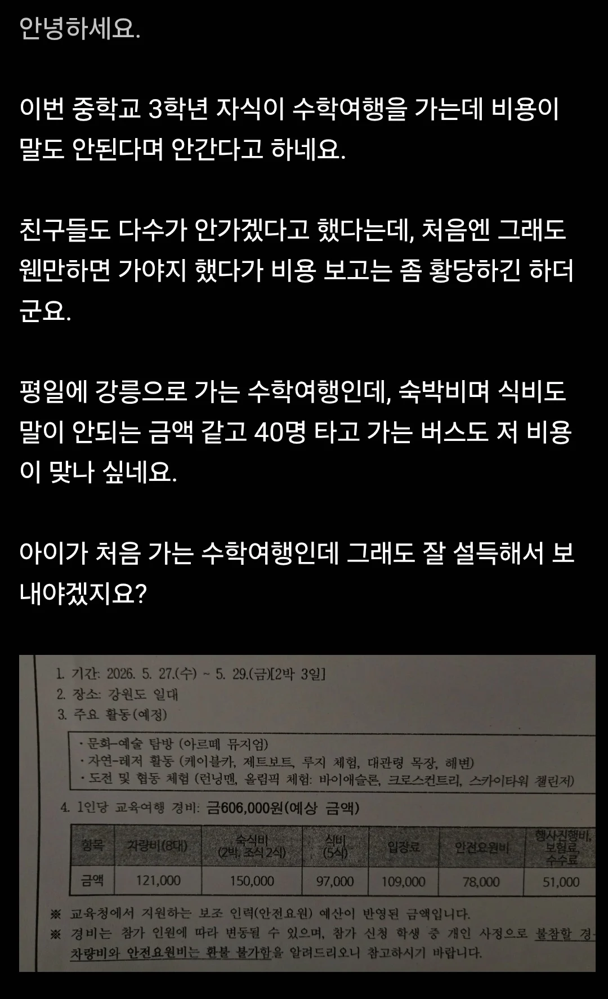

강릉 수학여행 안간다는 중3
댓글
수학여행에서 뭘 먹여야 점심저녁 5끼에 97000원이 나와 ㄷㄷ
단체가 왜 무조건 더 싸다고 생각하는거지
오히려 수학여행급 단체면
오히려 더 비싸지는거 모르나보네
아르떼뮤지엄 청소년 단체기준 인당 13000원이고, 레저활동으로 들어가는거 종목당 1~3만원 할텐데
그렇게 보면 입장료로 11만원 납득가는 가격이고
밥 제외하곤 나머지는 충분히 나올만한 가격인듯
슈킹 없어도 저정도 나올텐데
요즘은 2인 1실에, 안전요원(야간당직포함)필수, 물가상승 등으로 예전과 다르다는걸 많이들 알아서 논란은 안될듯
식비빼고는 다 납득갈만한 수준이긴하네
레저 체험 생각보다 비싸더라
지원금이 별로안나오나? 주위 중고딩애들 수학여행가는거보니까 지원금이 반이상 나와서 얼마 안내던데 저긴아닌가보네
지역 학교마다 다른듯??
원래 여행 땐 인원이 많아서 싸지는 품목도 있고, 오히려 비싸지는 품목도 있는 법이지
그냥 요세 물가가 개비싸져서
저정도 나올 수 밖에 없다
저돈이면 걍 수학여행안보내는 대신 제주나 일본 가족여행을 다녀올듯
2박3일인데 저돈이면 적정가격이긴하네;;
버스가 유독 비싸네
숙박은 딱 2인실 금액인것같고 음식도 뭐 옛날마냥 그지같은거 안맥이니까 적정가격인듯
우리때나 제주도가서 흑돼지불고기랍시고 고기쪼가리나먹었지 요즘은 그렇게 먹이면 민원러시들어온다며 ㅋㅋㅋㅋㅋ
단체면 쌀꺼라는 인식은 한방에 8명 이상씩 몰아넣는 80~90년대 이야기고, 일단 기본적 20인 이하씩 끊기 힘들다? 버스가 40인승으로 타야됨. 40인승 버스 하루에 100만원 안팍임. 2박 3일이니 300만원을 반 아이들이 나눠서 내야한다는거. 그리고 방, 요즘은 늙크크들 시대처럼 한방에 수십명씩 안넣음. 많아야 4인씩 넣음. 이것도 가끔 절대 붙여놓으면 안되는 애들 있으면 더 쪼개질수도 있어서 가격 상승 요인이 됨. 식비도 에버랜드같은데 밀쿠폰도 만원 넘어감. 싸게 국밥으로 먹인다? 큰 규모면 단체로 먹일수 있는 식당도 제한됨. 그리고 당연한 얘기지만 예전처럼 슈킹해서 싼거 먹인다는 건 말도 안되는 얘기임.
버스 1대 121,000원 x 대충 20명 = 240만원
40인승 버스 빌리는데 100만원도 안함 ㅅㅂ 3배를 띵가먹노
하루에 100만원쯤 함. 그리고 2박3일이라 3일 가격인거임
2인 1실 / 28인 리무진도 못채우는 1반 인원 / 추가인력(안전요원) 배치
어떻게 봐도 비싸질 구석만 보이는데